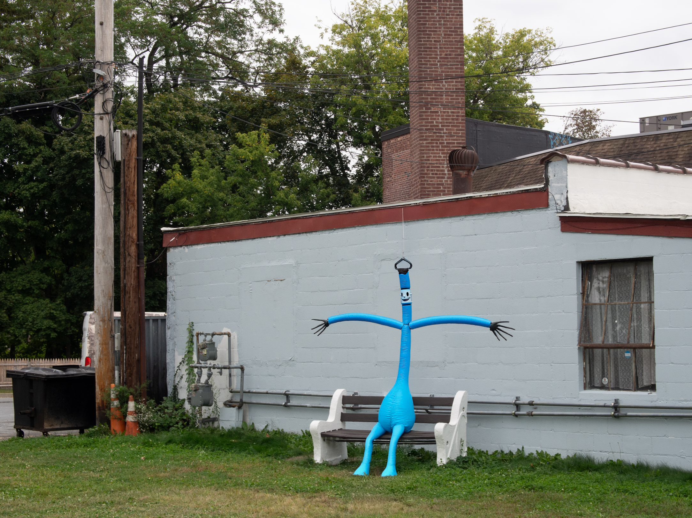
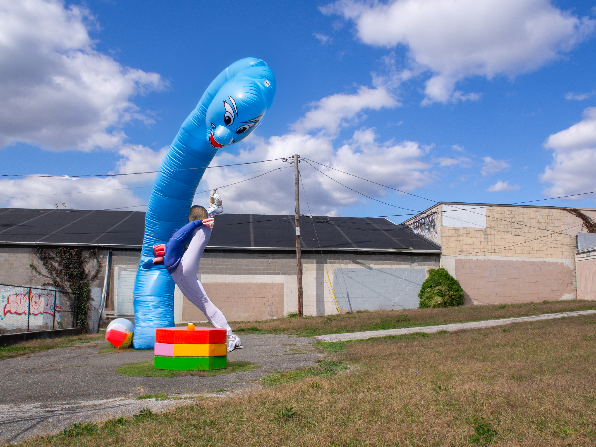
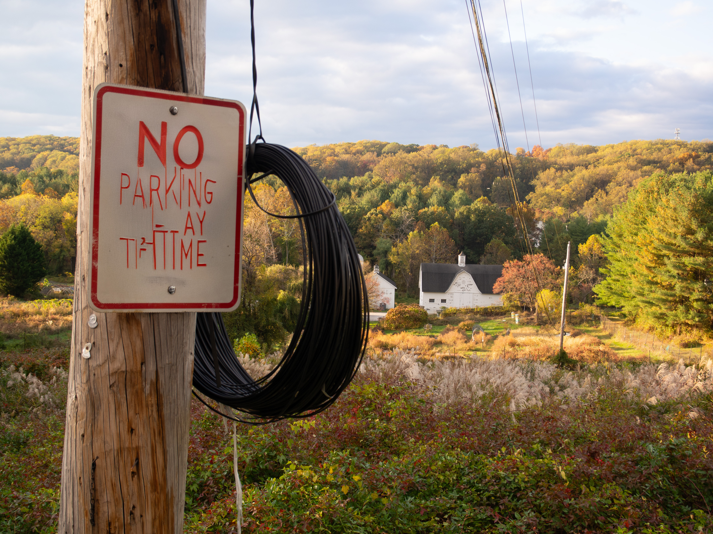

invading – experiments with generative a.i.
a.i. is looming and slop is taking over our lives; uncanny, peverse. what does that look like?
background images are photos taken by me, figures created with adobe firefly.






